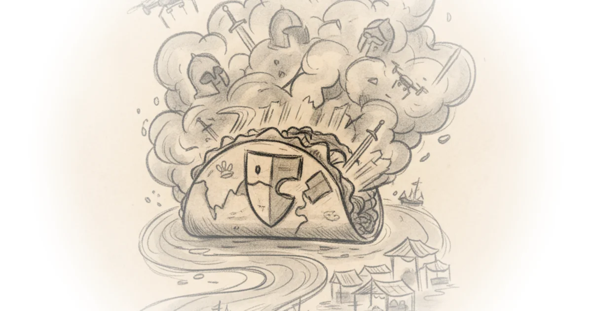

Nate Silver cuts through the noise of geopolitical headlines by treating the current Middle East crisis not as a diplomatic failure, but as a high-stakes game of poker played on a broken board. His most provocative claim is that the administration's willingness to escalate military action stems from a perceived immunity to consequences, creating a dangerous dynamic where market panic is the only remaining check on executive power.
The Psychology of Unchecked Power
Silver begins by questioning the strategic calculus behind the decision to engage in conflict with Iran, suggesting that the lack of anticipated blowback is a feature, not a bug, of the current leadership style. He writes, "Trump is a man who has faced remarkably few consequences for his own actions. It's easier to do what you 'feel in your bones' when you don't bear the downside risks." This observation reframes the administration's aggression not as a coherent foreign policy doctrine, but as a byproduct of a leader who has historically operated on a "low difficulty level" where risks are externalized.

The author argues that this pattern has held true across domestic and international spheres, noting that "not only were there no real legal consequences to Trump from January 6, but he actually got re-elected four years later!" This historical context is crucial; it suggests that the usual political feedback loops that restrain executive overreach have been severed. However, critics might argue that attributing complex geopolitical maneuvers solely to personal psychology ignores the institutional pressures and intelligence assessments that likely drove the decision to strike.
"'You can just do things' is often a sound approach when you're playing on a low difficulty level."
Silver extends this logic to the concept of deterrence, arguing that the administration's strategy relies on the opposition folding. He notes, "Game theory will tell you that, if your opponent is playing optimally, you have to make some effort to balance and disguise your strategy. You can't always bluff or the other guy will wise up. But some guys do always fold." Here, the commentary draws a sharp distinction between rational actors and those who have learned that the executive branch will retreat at the first sign of trouble.
The Market as a Chaotic Deterrent
The piece pivots to the financial sector, dissecting the popular theory of the "Trump put"—the idea that the administration will reverse course whenever markets tumble. Silver is skeptical, writing, "I've expressed skepticism of this idea before because it anthropomorphizes 'the market' into an entity that has agency and is capable of strategic behavior." Instead of a coordinated response, he suggests the market behaves more like a chaotic system where small triggers can lead to unpredictable, cascading failures.
He connects this to the broader concept of chaos theory, observing that "small changes in initial conditions can produce highly variable and unpredictable results in a sufficiently complex system." This is a compelling reframing of market volatility; rather than a rational signal, price spikes in oil and gas are portrayed as the result of a system that has lost its ability to self-correct. The author points out that while oil prices have fluctuated wildly, "some analysts think oil could reach as high as $200 a barrel if the crisis in the Persian Gulf persists for more than another few weeks."
Silver brings in the historical weight of nuclear deterrence to explain why this randomness might actually be a deterrent. He references Thomas Schelling's concept of "the threat that leaves something to chance," noting that "in a true mixed strategy, the participants in the 'game' are supposed to be literally randomizing their actions." This reference to Schelling, a foundational figure in game theory, adds significant depth, suggesting that the very unpredictability of the administration's actions might prevent escalation because no one can calculate the odds of a full-blown war.
"You can't half-panic any more than you can be half-pregnant."
However, the argument faces a hurdle when applied to real-world economics. Critics might note that while chaos theory explains volatility, it does not account for the deliberate hedging strategies of major energy firms or the potential for diplomatic off-ramps that Silver seems to downplay. The market's reaction may not be random chaos, but a rational assessment of risk that the administration is underestimating.
The Fog of War and Institutional Dynamics
The final section of the commentary addresses the multilateral nature of the conflict, emphasizing that the United States does not act in a vacuum. Silver highlights the role of allies, stating, "The United States didn't go to war alone; we're partnered with Israel, which reportedly threatened to proceed unilaterally with or without us." This introduces a critical variable: the administration's control over the situation is limited by the actions of partners who may have their own timelines and thresholds for engagement.
He also touches on the competence of the executive branch, questioning the coherence of the plan given the leadership of the Department of War. "Maybe the Department of War has some sort of coherent plan," Silver writes, "but I'd have more confidence if Pete Hegseth weren't leading it." This candid assessment underscores the risk that the "fog of war" is compounded by internal disorganization.
The author concludes that while the "base case of 'cooler heads will prevail'" is often reliable, this specific scenario is an outlier. "Usually isn't always, and war in the Middle East is the very opposite of an easy-mode problem," he asserts. This serves as a sobering reminder that the game theory models that work in stable environments may collapse when faced with the volatility of modern conflict.
Bottom Line
Silver's strongest contribution is his application of game theory and chaos theory to explain why traditional market signals may fail to restrain the current administration's military impulses. His analysis effectively highlights the danger of a leader who perceives no downside risk, turning geopolitical brinkmanship into a high-stakes gamble. The piece's biggest vulnerability lies in its heavy reliance on the assumption of randomness; if the administration's actions are actually calculated rather than chaotic, the entire deterrent framework Silver describes could unravel. Readers should watch for whether oil prices stabilize or spike further, as this will be the first true test of whether the "threat that leaves something to chance" is a viable strategy or a path to disaster.